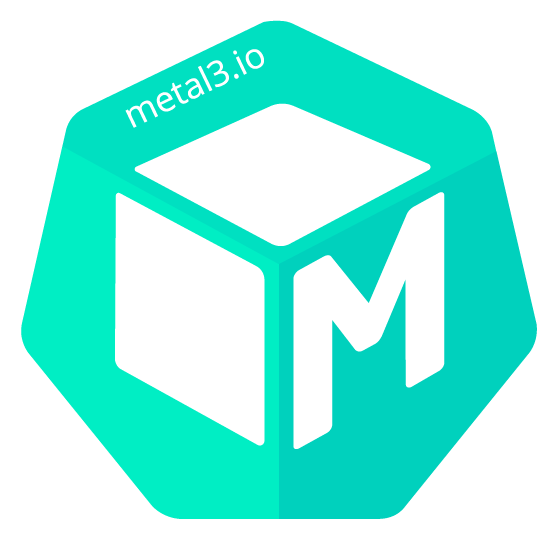

Metal³
Metal³ project (pronounced: Metal Kubed) exists to provide components that allow you to do bare metal host management for Kubernetes. Metal³ works as a Kubernetes application, meaning it runs on Kubernetes and is managed through Kubernetes interfaces.
Metal³ is one of the providers for the Kubernetes sub-project Cluster API and is focused on providing Kubernetes native APIs to manage Kubernetes clusters in a bare metal environment.
Community
Metal³ is constantly being improved thanks to the users, contributors and maintainers, and we very much welcome any contribution to the project. Please see the contribution guide for more details on how to get started contributing to the project.
You can reach community members via:
- Metal³ Development Mailing List
- #cluster-api-baremetal on Kubernetes Slack
- Bi-Weekly Community Meetings every alternate Wednesday at 13:00 UTC on Microsoft Teams
- Meetings: [ notes | recordings ]
- Metal³ website
Code of Conduct
See the Contributor Covenant Code of Conduct
Project Overview
Metal³ Components
Baremetal Operator
Unlike any other Cluster API providers, Metal³ comes with an extra component called Baremetal Operator (BMO), which manages the actual bare metal hosts. The reason for introducing an extra component is because all the other cloud providers already had built APIs to manage their respective infrastructure whereas in Metal³ there was no baremetal infrastructure APIs.
Ironic integration
Under the hood Baremetal Operator is using OpenStack Ironic as a provisioning tool to manage the bare metal hosts. Baremetal Operator doesn’t require you to deploy and manage the Ironic since it is the job of Metal³ to manage it.
Please note that, although Baremetal Operator utilizes Ironic from the OpenStack community, it doesn’t bring any other OpenStack services into your cluster apart from the bare minimum Ironic setup.
Cluster-api-provider-metal³
Cluster-api-provider-metal³ (CAPM3) is a provider implementation of the Cluster API. CAPM3 provides Kubernetes APIs to create, configure and manage clusters on bare metal based environments.
Cluster-Api-Provider-Metal³
Workflow
API concepts
Baremetal Operator
Ironic Integration
BaremetalHost Provisioning States
The following diagram shows the possible Provisioning State transitions for the BaremetalHost object:

Created
Newly created hosts move immediately to Discovered or Registering. No host stays in the Created state while the operator is working properly.
Unmanaged
An Unmanaged host is missing both the BMC address and credentials secret name, and does not have any information to access the BMC for registration.
Externally Provisioned
An Externally Provisioned host was deployed using another tool and then a host object was created with the externallyProvisioned flag set. Hosts in this state are monitored, and only their power status is managed.
Registering
The host will stay in the Registering state while the BMC access details are being validated.
Inspecting
After the host is registered, an agent image will be booted on it using a ramdisk. The agent collects information about the available hardware components, and this process is called “inspection.” The host will stay in the Inspecting state until this process is completed.
Match Profile
A host in the Match Profile state is being matched against a hardware profile.
Ready
A host in the Ready state is available to be provisioned.
Provisioning
While an image is being copied to the host and it is being configured to run the image the host will be in the Provisioning state.
Provisioned
After an image is copied to the host and the host is running the image, it will be in the Provisioned state.
Deprovisioning
When the previously provisioned image is being removed from the host, it will be in the Deprovisioning state.
Error
If an error occurs during one of the processing states (Registering, Inspecting, Provisioning, Deprovisioning) the host will enter the Error state.
Deleting
When the host is marked to be deleted, it will move from its current state to Deleting, at which point the resource record is deleted from kubernetes.
Workflow
API and Field Definitions
BareMetalHost
Metal³ introduces the concept of BareMetalHost resource, which defines a physical host and its properties. The BareMetalHost embeds two well differentiated sections, the bare metal host specification and its current status.
Metal³-Dev-Env
Ip-Address-Manager
Workflow
API concepts
Developer Guide
Testing
Metal³-Dev-Env
In this sectons we will cover the basics of how to run and use Metal³-dev-env to create a Kubernetes cluster in Metal³ development environment. Metal³-dev-env is an emulated environment which spins up a set of Virtual Machines (VM)s and does the management of those VMs as if they were bare metal hosts.
Installation
Prerequisites
- System with CentOS 8 or Ubuntu 20.04 (Focal Fossa)
- System with at least 4C CPUs, 16 GB RAM memory.
- Run as a user with passwordless sudo access
- Export a couple of environment variables if you don’t want to use the default ones
export IMAGE_OS=Ubuntu
export CONTAINER_RUNTIME=docker
export EPHEMERAL_CLUSTER=kind
Either kind or minikube
can be used for creating a bootstrap
Kubernetes cluster. By default for Ubuntu based systems,
Metal³-dev-env will use kind to create a bootstrap cluster
while for CentOS based systems it is a Minikube cluster. To
manipulate cluster creation tool use EPHEMERAL_CLUSTER variable:
export EPHEMERAL_CLUSTER=<...>
To define what OS distro should be used for the target
cluster nodes please export the IMAGE_OS environment
variable with desired value. Possible options are Ubuntu
and Centos.
export IMAGE_OS=<...>
Setup
Now that we have exported necessary environment variables, we can run make which will execute a series of scripts. You can find more information here about what each script is responsible for.
git clone https://github.com/metal3-io/metal3-dev-env.git
cd /metal3-dev-env
make
This setup will take approx. 30min, and during that time the scripts will:
- install necessary packages and tools
- make networking configurations
- create libvirt VMs
- create a bootstrap cluster (kind or minikube)
- start necessary containers (ironic, ironic-inspector, vbmc, sushy, dnsmasq, etc.)
- deploy Cluster API and Metal³ provider components, like CAPM3 and BMO
- apply
BareMetalHostCustom Resources (CR)s
By the end of the successful run, you should be able to see
BareMetalHost objects in metal3 namespace in Ready state.
Provision cluster and machines
Now that we have BareMetalHost objects in Ready state,
we can start provisioning them.
Tilt
Custom Resources
Metal3Cluster
The metal3Cluster object contains information related to the deployment of the cluster on baremetal. It currently has two specification fields:
Metal3Cluster example
apiVersion: infrastructure.cluster.x-k8s.io/v1alpha4
kind: Metal3Cluster
metadata:
name: example_cluster
spec:
controlPlaneEndpoint:
host: 192.168.111.249
port: 6443
noCloudProvider: true
Metal3Cluster spec
controlPlaneEndpoint - is an endpoint used to communicate
with the target’s cluster apiserver.
noCloudProvider - is a boolean. As there is no cloud provider
behind Metal³, this field is usually set to true, meaning that no
external cloud provider will be used to deploy the cluster on.
Metal3Machine
The Metal3Machine contains information related to the deployment of the BareMetalHost such as the image and the host selector. For each machine, there must be a Metal3Machine associated to it.
Metal3Machine Example
apiVersion: infrastructure.cluster.x-k8s.io/v1alpha4
kind: Metal3Machine
metadata:
name: controlplane-0
spec:
image:
url: https://cloud-images.ubuntu.com/bionic/current/bionic-server-cloudimg-amd64.img
checksum: https://cloud-images.ubuntu.com/bionic/current/bionic-server-cloudimg-amd64.img.md5sum
hostSelector:
matchLabels:
key1: value1
matchExpressions:
key: key2
operator: in
values: {‘abc’, ‘123’, ‘value2’}
dataTemplate:
Name: controlplane-metadata
metaData:
Name: controlplane-0-metadata-0
Metal3Machine spec
image
This includes two sub-fields, url and checksum, which
include the URL to the image and the URL to a checksum for that image. These
fields are required. The image will be used for provisioning of the
BareMetalHost chosen by the Machine actuator.
userData
This includes two sub-fields, name and namespace, which
reference a Secret that contains base64 encoded user-data to be written to
a config drive on the provisioned BareMetalHost. This field is optional and
is automatically set by CAPM3 with the userData from the machine object. If
you want to overwrite the userData, this should be done in the CAPI machine.
dataTemplate
This includes a reference to a Metal3DataTemplate object
containing the metadata and network data templates, and includes two fields,
name and namespace.
metaData
A reference to a secret containing the metadata rendered from the Metal3DataTemplate metadata template object automatically. In case this would not be managed by the Metal3DataTemplate controller, if provided by the user for example, the ownerreference should be set properly to ensure that the secret belongs to the cluster ownerReference tree (see doc).
networkData
A reference to a secret containing the network data rendered from the Metal3DataTemplate metadata template object automatically. In case this would not be managed by the Metal3DataTemplate controller, if provided by the user for example, the ownerreference should be set properly to ensure that the secret belongs to the cluster ownerReference tree (see doc). The content of the secret should be a yaml equivalent of a json object that follows the format definition that can be found here.
hostSelector
Specifies criteria for matching labels on BareMetalHost
objects. This can be used to limit the set of available BareMetalHost
objects chosen for this Machine.
The metaData and networkData field in the spec section are for the user
to give directly a secret to use as metaData or networkData. The userData,
metaData and networkData fields in the status section are for the
controller to store the reference to the secret that is actually being used,
whether it is from one of the spec fields, or somehow generated. This is aimed
at making a clear difference between the desired state from the user (whether
it is with a DataTemplate reference, or direct metaData or userData secrets)
and what the controller is actually using.
The dataTemplate field consists of an object reference to a
Metal3DataTemplate object containing the templates for the metadata and
network data generation for this Metal3Machine. The renderedData field is a
reference to the Metal3Data object created for this machine. If the
dataTemplate field is set but either the renderedData, metaData or
networkData fields in the status are unset, then the Metal3Machine
controller will wait until it can find the Metal3Data object and the rendered
secrets. It will then populate those fields.
When CAPM3 controller will set the different fields in the BareMetalHost,
it will reference the metadata secret and the network data secret
in the BareMetalHost. If any of the metaData or networkData status fields
are unset, that field will also remain unset on the BareMetalHost.
When the Metal3Machine gets deleted, the CAPM3 controller will remove its ownerreference from the data template object. This will trigger the deletion of the generated Metal3Data object and the secrets generated for this machine.
BareMetalHost
BareMetalHost is another CRD which represents a physical host and holds information about hardware inventory.
BareMetalHost Example
The following is a complete example from a running cluster of a BareMetalHost resource (in YAML), it includes its specification and status sections:
apiVersion: metal3.io/v1alpha1
kind: BareMetalHost
metadata:
creationTimestamp: "2019-09-20T06:33:35Z"
finalizers:
- baremetalhost.metal3.io
generation: 2
name: bmo-master-0
namespace: bmo-project
resourceVersion: "22642"
selfLink: /apis/metal3.io/v1alpha1/namespaces/bmo-project/baremetalhosts/bmo-master-0
uid: 92b2f77a-db70-11e9-9db1-525400764849
spec:
bmc:
address: ipmi://10.10.57.19
credentialsName: bmo-master-0-bmc-secret
bootMACAddress: 98:03:9b:61:80:48
consumerRef:
apiVersion: machine.openshift.io/v1beta1
kind: Machine
name: bmo-master-0
namespace: bmo-project
externallyProvisioned: true
hardwareProfile: default
image:
checksum: http://172.16.1.100/images/myOSv1/myOS.qcow2.md5sum
url: http://172.16.1.100/images/myOSv1/myOS.qcow2
online: true
userData:
name: bmo-master-user-data
namespace: bmo-project
networkData:
name: bmo-master-network-data
namespace: bmo-project
metaData:
name: bmo-master-meta-data
namespace: bmo-project
status:
errorMessage: ""
goodCredentials:
credentials:
name: bmo-master-0-bmc-secret
namespace: bmo-project
credentialsVersion: "5562"
hardware:
cpu:
arch: x86_64
clockMegahertz: 2000
count: 40
flags: []
model: Intel(R) Xeon(R) Gold 6138 CPU @ 2.00GHz
firmware:
bios:
date: 12/17/2018
vendor: Dell Inc.
version: 1.6.13
hostname: bmo-master-0.localdomain
nics:
- ip: 172.22.135.105
mac: "00:00:00:00:00:00"
model: unknown
name: eno1
pxe: true
speedGbps: 25
vlanId: 0
ramMebibytes: 0
storage: []
systemVendor:
manufacturer: Dell Inc.
productName: PowerEdge r460
serialNumber: ""
hardwareProfile: ""
lastUpdated: "2019-09-20T07:03:23Z"
operationalStatus: OK
poweredOn: true
provisioning:
ID: a4438010-3fc6-4c5c-b570-900bbe85da57
image:
checksum: ""
url: ""
state: externally provisioned
triedCredentials:
credentials:
name: bmo-master-0-bmc-secret
namespace: bmo-project
credentialsVersion: "5562"
BareMetalHost spec
The BareMetalHost’s spec defines the desired state of the host. It contains mainly, but not only, provisioning details.
bmc
The bmc fields contain the connection information for the BMC
(Baseboard Management Controller) on the host.
The sub-fields are
- address -- The URL for communicating with the BMC controller, based on the provider being used. See below for more details.
- credentialsName -- A reference to a secret containing the username and password for the BMC.
- disableCertificateVerification -- A boolean to skip certificate validation when true.
BMC URLs vary based on the type of BMC and the protocol used to communicate with them.
- IPMI
ipmi://<host>:<port>, an unadorned<host>:<port>is also accepted and the port is optional, if using the default one (623).
- Dell iDRAC
idrac://(oridrac+http://to disable TLS).idrac-virtualmedia://to use virtual media instead of PXE for attaching the provisioning image to the host.
- Fujitsu iRMC
irmc://<host>:<port>, where<port>is optional if using the default.
- HUAWEI ibmc
ibmc://<host>:<port>(oribmc+http://<host>:<port>to disable TLS)
- iLO 5 Redfish
ilo5-redfish://(orilo5-redfish+http://to disable TLS), the hostname or IP address, and the path to the system ID are required, for exampleilo5-redfish://myhost.example/redfish/v1/Systems/MySystemExample
- Redfish
redfish://(orredfish+http://to disable TLS)redfish-virtualmedia://to use virtual media instead of PXE for attaching the provisioning image to the host.- The hostname or IP address, and the path to the system ID are
required for all variants. For example
redfish://myhost.example/redfish/v1/Systems/System.Embedded.1orredfish://myhost.example/redfish/v1/Systems/1
online
A boolean indicating whether the host should be powered on (true) or off (false). Changing this value will trigger a change in power state on the physical host.
consumerRef
A reference to another resource that is using the host, it could be empty if the host is not being currently used. For example, a Machine resource when the host is being used by the machine-api.
externallyProvisioned
A boolean indicating whether the host provisioning and deprovisioning are managed externally. When set, the host’s power status and hardware inventory will be monitored but no provisioning or deprovisioning operations are performed on the host.
image
Holds details for the image to be deployed on a given host.
The sub-fields are
- url -- The URL of an image to deploy to the host.
- checksum -- The actual checksum or a URL to a file containing the checksum for the image at image.url.
- checksumType -- Checksum algorithms can be specified. Currently
only
md5,sha256,sha512are recognized. If nothing is specifiedmd5is assumed. - format -- This is the disk format of the image. It can be one of
raw,qcow2,vdi,vmdk, or be left unset. Setting it to raw enables raw image streaming in Ironic agent for that image.
userData
A reference to the Secret containing the cloudinit user data and its namespace, so it can be attached to the host before it boots for configuring different aspects of the OS (like networking, storage, ...).
networkData
A reference to the Secret containing the network configuration data (e.g. network_data.json) and its namespace, so it can be attached to the host before it boots to set network up
description
A human-provided string to help identify the host.
hardwareProfile
This field is deprecated. See rootDeviceHints instead.
The name of the hardware profile to use. The following are the current
supported hardwareProfile settings and their corresponding root
devices.
| hardwareProfile | Root Device |
|---|---|
unknown | /dev/sda |
libvirt | /dev/vda |
dell | HCTL: 0:0:0:0 |
dell-raid | HCTL: 0:2:0:0 |
openstack | /dev/vdb |
NOTE: These are subject to change.
rootDeviceHints
Guidance for how to choose the device to receive the image being provisioned. The storage devices are examined in the order they are discovered during inspection and the hint values are compared to the inspected values. The first discovered device that matches is used. Hints can be combined, and if multiple hints are provided then a device must match all hints in order to be selected.
The sub-fields are
- deviceName -- A string containing a Linux device name like
/dev/vda. The hint must match the actual value exactly. - hctl -- A string containing a SCSI bus address like
0:0:0:0. The hint must match the actual value exactly. - model -- A string containing a vendor-specific device identifier. The hint can be a substring of the actual value.
- vendor -- A string containing the name of the vendor or manufacturer of the device. The hint can be a substring of the actual value.
- serialNumber -- A string contianing the device serial number. The hint must match the actual value exactly.
- minSizeGigabytes -- An integer representing the minimum size of the device in Gigabytes.
- wwn -- A string containing the unique storage identifier. The hint must match the actual value exactly.
- wwnWithExtension -- A string containing the unique storage identifier with the vendor extension appended. The hint must match the actual value exactly.
- wwnVendorExtension -- A string containing the unique vendor storage indentifier. The hint must match the actual value exactly.
- rotational -- A boolean indicating whether the device should be
a rotating disk (
true) or not (false).
BareMetalHost status
Moving onto the next block, the BareMetalHost’s status which represents the host’s current state. Including tested credentials, current hardware details, etc.
goodCredentials
A reference to the secret and its namespace holding the last set of BMC credentials the system was able to validate as working.
triedCredentials
A reference to the secret and its namespace holding the last set of BMC credentials that were sent to the provisioning backend.
lastUpdated
The timestamp of the last time the status of the host was updated.
operationalStatus
The status of the server. Value is one of the following:
- OK -- Indicates all the details for the host are known and working, meaning the host is correctly configured and manageable.
- discovered -- Implies some of the host’s details are either not working correctly or missing. For example, the BMC address is known but the login credentials are not.
- error -- Indicates the system found some sort of irrecuperable error. Refer to the errorMessage field in the status section for more details.
errorMessage
Details of the last error reported by the provisioning backend, if any.
hardware
The details for hardware capabilities discovered on the host. These are filled in by the provisioning agent when the host is registered.
The sub-fields are
nics-- List of network interfaces for the host.- name -- A string identifying the network device, e.g. nic-1.
- mac -- The MAC address of the NIC.
- ip -- The IP address of the NIC, if one was assigned when the discovery agent ran.
- speedGbps -- The speed of the device in Gbps.
- vlans -- A list holding all the VLANs available for this NIC.
- vlanId -- The untagged VLAN ID.
- pxe -- Whether the NIC is able to boot using PXE.
storage-- List of storage (disk, SSD, etc.) available to the host.- name -- A string identifying the storage device, e.g. disk 1 (boot).
- rotational -- Either true or false, indicates whether the disk is rotational.
- sizeBytes -- Size of the storage device.
- serialNumber -- The device’s serial number.
cpu-- Details of the CPU(s) in the system.- arch -- The architecture of the CPU.
- model -- The model string.
- clockMegahertz -- The speed in GHz of the CPU.
- flags -- List of CPU flags, e.g. ‘mmx’,’sse’,’sse2’,’vmx’, ...
- count -- Amount of these CPUs available in the system.
firmware-- Contains BIOS information like for instance its vendor and version.systemVendor-- Contains information about the host’s manufacturer, the productName and serialNumber.ramMebibytes-- The host’s amount of memory in Mebibytes.
hardwareProfile (status)
This field is deprecated. See rootDeviceHints instead.
The name of the hardware profile that matches the hardware discovered
on the host based on the details saved to the Hardware section. If
the hardware does not match any known profile, the value unknown
will be set on this field and is used by default. In practice, this
only affects which device the OS image will be written to. The
following are the current supported hardwareProfile settings and
their corresponding root devices.
| hardwareProfile | Root Device |
|---|---|
unknown | /dev/sda |
libvirt | /dev/vda |
dell | HCTL: 0:0:0:0 |
dell-raid | HCTL: 0:2:0:0 |
openstack | /dev/vdb |
NOTE: These are subject to change.
poweredOn
Boolean indicating whether the host is powered on.
See online on the BareMetalHost’s Spec.
provisioning
Settings related to deploying an image to the host.
- state -- The current state of any ongoing provisioning operation.
The following are the currently supported ones:
- <empty string> -- There is no provisioning happening, at the moment.
- registration error -- The details for the host’s BMC are either incorrect or incomplete therfore the host could not be managed.
- registering -- The host’s BMC details are being checked.
- match profile -- The discovered hardware details on the host are being compared against known profiles.
- ready -- The host is available to be consumed.
- provisioning -- An image is being written to the host’s disk(s).
- provisioning error -- The image could not be written to the host.
- provisioned -- An image has been completely written to the host’s disk(s).
- externally provisioned -- Metal³ does not manage the image on the host.
- deprovisioning -- The image is being wiped from the host’s disk(s).
- inspecting -- The hardware details for the host are being collected by an agent.
- power management error -- An error was found while trying to power the host either on or off.
- id -- The unique identifier for the service in the underlying provisioning tool.
- image -- The image most recently provisioned to the host.
- rootDeviceHints -- The root device selection instructions used for the most recent provisioning operation.
Metal3MachineTemplate
The metal3MachineTemplate contains the template to create Metal3Machine
Metal3MachineTemplate example
apiVersion: infrastructure.cluster.x-k8s.io/v1alpha4
kind: Metal3MachineTemplate
metadata:
name: md-0
spec:
template:
spec:
image:
url: https://cloud-images.ubuntu.com/bionic/current/bionic-server-cloudimg-amd64.img
checksum: https://cloud-images.ubuntu.com/bionic/current/bionic-server-cloudimg-amd64.img.md5sum
hostSelector:
matchLabels:
key1: value1
matchExpressions:
key: key2
operator: in
values: {‘abc’, ‘123’, ‘value2’}
dataTemplate:
Name: md-0-metadata
Metal3MachineTemplate spec
Metal3MachineTemplate status
IpPool
IpPool example
apiVersion: ipam.metal3.io/v1alpha1
kind: IPPool
metadata:
name: pool-1
namespace: default
ownerReferences:
- apiVersion: infrastructure.cluster.x-k8s.io/v1alpha4
kind: Metal3Cluster
name: cluster-1
spec:
clusterName: cluster-1
pools:
- start: 192.168.0.10
end: 192.168.0.15
subnet: 192.168.0.0/24
gateway: 192.168.0.1
prefix: 24
dnsServers:
- 8.8.8.8
- start: 192.168.1.10
end: 192.168.1.15
subnet: 192.168.1.0/24
gateway: 192.168.1.1
prefix: 24
gateway: 192.168.1.1
prefix: 24
dnsServers:
- 8.8.4.4
preAllocations:
"RenderedData-10": 192.168.0.9
"RenderedData-9": 192.168.0.8
namePrefix: "provisioning"
status:
lastUpdated: "2020-04-02T06:36:09Z"
allocations:
"RenderedData-1": "192.168.0.11"
"RenderedData-10": 192.168.0.9
"RenderedData-9": 192.168.0.8
IpPool spec
pools
A list that contains a list of IP address pools.
pools.start
Start IP addresses of the pool. Specifying single ip addresses can be achieved by setting the start and end ip address to that single ip address.
pools.end
End IP addresses of the pool.
pools.subnet
A field that allows to verify that the allocated IP is in the pool and from which the start and end ip addresses can be inferred.
prefix
A prefix length from a network in Classless Inter-Domain
Routing (CIDR) notation. It can be given for each pool of
the list, or globally. If given for a pool it will override
the global setting, that is default value. It will be set
on the IPAddress and can be fetched from a Template.
dnsServers
An IP address of a dns server. It can be given for each
pool of the list, or globally. If given for a pool it
will override the global setting, that is default value.
It will be set on the IPAddress and can be fetched
from a Template.
gateway
An IP address of a network gateway. It can be given for
each pool of the list, or globally. If given for a pool
it will override the global setting, that is default value.
It will be set on the IPAddress and can be fetched from
a Template.
preAllocations
A map of object name and ip address that allow a user to specify a set of static allocations for some objects.
namePrefix
It contains the prefix used to name the IPAddress objects created.
It must remain the same for a subnet, across updates or changes in the
IPPool object to keep the existing leases.
IpPool status
lastUpdated
A field with the timestamp of the last update.
Note: In case of an error during the allocation (pool exhaustion for example), the error would be reported on the
Claimobject, in theerrorMessagefield. The allocations map will map the IP address to theRenderedDataobject it was allocated for and the addresses will map theRenderedDataobjects with theIPAddressobjects.
IpClaim
IpClaim example
apiVersion: ipam.metal3.io/v1alpha1
kind: IPClaim
metadata:
name: RenderedData-1
namespace: default
ownerReferences:
- apiVersion: metadata.metal3.io/v1alpha1
kind: Data
name: data-1
spec:
owner:
name: RenderedData-1
pool:
name: pool-1
status:
ipAddress:
name: pool-1-192-168-0-11
errorMessage: ""
IpClaim spec
IpClaim status
IPAddress
IPAddress example
apiVersion: ipam.metal3.io/v1alpha1
kind: IPAddress
metadata:
name: pool-1-192-168-0-11
namespace: default
ownerReferences:
- apiVersion: ipam.metal3.io/v1alpha1
kind: IPPool
name: pool-1
- apiVersion: ipam.metal3.io/v1alpha1
kind: IPClaim
name: RenderedData-1
spec:
claim:
Name: RenderedData-1
Address: 192.168.0.11
prefix: 24
gateway: 192.168.0.1
dnsServers:
- 8.8.8.8
pool:
Name: pool-1
status:
ready: true
IPAddress spec
IPAddress status
Metal3Data
The output of the controller would be a Metal3Data object,one per node linking to the Metal3DataTemplate object and the associated secrets
Metal3Data example
apiVersion: infrastructure.cluster.x-k8s.io/v1alpha4
kind: Metal3Data
metadata:
name: nodepool-1-0
namespace: default
ownerReferences:
- apiVersion: infrastructure.cluster.x-k8s.io/v1alpha4
controller: true
kind: Metal3DataTemplate
name: nodepool-1
spec:
index: 0
metaData:
name: machine-1-metadata
namespace: default
networkData:
name: machine-1-metadata
namespace: default
metal3Machine:
name: machine-1
namespace: default
status:
ready: true
error: false
errorMessage: ""
Metal3Data spec
The Metal3Data contains the index of this node, and links to the secrets generated and to the Metal3Machine using this Metal3Data object.
If the Metal3DataTemplate object is updated, the generated secrets will not be updated, to allow for reprovisioning of the nodes in the exact same state as they were initially provisioned. Hence, to do an update, it is necessary to do a rolling upgrade of all nodes.
The reconciliation of the Metal3DataTemplate object will also be triggered by
changes on Metal3Machines. In the case that a Metal3Machine gets modified, if
the dataTemplate references a Metal3DataTemplate, that Metal3DataClaim
object will be reconciled. There will be two cases:
- An already generated Metal3Data object exists for that Metal3DataClaim. If the reference is not in the Metal3DataClaim object, the reconciler will add it. The reconciler will also verify that the required secrets exist. If they do not, they will be created.
- if no Metal3Data exists for that Metal3DataClaim, then the reconciler will create one and fill the respective field with the secret name.
To create a Metal3Data object, the Metal3DataClaim controller will select an
index for that Metal3Machine. The selection happens by selecting the lowest
available index that is not in use. To do that, the controller will list all
existing Metal3Data object linked to this Metal3DataTemplate and to get the
unavailable indexes. The indexes always start from 0 and increment by 1. The
lowest available index is to be used next. The dataNames field contains the
map of Metal3Machine to Metal3Data and the indexes contains the map of
allocated indexes and claims.
Once the next lowest available index is found, it will create the Metal3Data
object. The name would be a concatenation of the Metal3DataTemplate name and
index. Upon conflict, it will fetch again the list to consider the new list of
Metal3Data and try to create the new object with the new index, this will happen
until the new object is created successfully. Upon success, it will render the
content values, and create the secrets containing the rendered data. The
controller will generate the content based on the metaData or networkData
field of the Metal3DataTemplate Specs. The ready field in renderedData will
then be set accordingly. If any error happens during the rendering, an error
message will be added.
Metal3DataClaim
The Metal3DataClaim object will reference its target Metal3DataTemplate
object.
Metal3DataClaim example
apiVersion: infrastructure.cluster.x-k8s.io/v1alpha4
kind: Metal3DataClaim
metadata:
name: machine-1
namespace: default
ownerReferences:
- apiVersion: infrastructure.cluster.x-k8s.io/v1alpha4
controller: true
kind: Metal3Machine
name: machine-1
spec:
template:
name: nodepool-1
status:
renderedData:
name: nodepool-1-0
errorMessage: ""
Metal3DataClaim spec
Metal3DataClaim status
renderedData
A reference to the Metal3Data object.
errorMessage
A description of the error.
Metal3DataTemplate
Metal3DataTemplate example
apiVersion: infrastructure.cluster.x-k8s.io/v1alpha4
kind: Metal3DataTemplate
metadata:
name: nodepool-1
namespace: default
ownerReferences:
- apiVersion: infrastructure.cluster.x-k8s.io/v1alpha4
controller: true
kind: Metal3Cluster
name: cluster-1
spec:
metaData:
strings:
- key: abc
value: def
objectNames:
- key: name_m3m
object: metal3machine
- key: name_machine
object: machine
- key: name_bmh
object: baremetalhost
indexes:
- key: index
offset: 0
step: 1
ipAddressesFromIPPool:
- key: ip
Name: pool-1
prefixesFromIPPool:
- key: ip
Name: pool-1
gatewaysFromIPPool:
- key: gateway
Name: pool-1
dnsServersFromIPPool:
- key: dns
Name: pool-1
fromHostInterfaces:
- key: mac
interface: "eth0"
fromLabels:
- key: label-1
object: machine
label: mylabelkey
fromAnnotations:
- key: annotation-1
object: machine
annotation: myannotationkey
networkData:
links:
ethernets:
- type: "phy"
id: "enp1s0"
mtu: 1500
macAddress:
fromHostInterface: "eth0"
- type: "phy"
id: "enp2s0"
mtu: 1500
macAddress:
fromHostInterface: "eth1"
bonds:
- id: "bond0"
mtu: 1500
macAddress:
string: "XX:XX:XX:XX:XX:XX"
bondMode: "802.1ad"
bondLinks:
- enp1s0
- enp2s0
vlans:
- id: "vlan1"
mtu: 1500
macAddress:
string: "YY:YY:YY:YY:YY:YY"
vlanId: 1
vlanLink: bond0
networks:
ipv4DHCP:
- id: "provisioning"
link: "bond0"
ipv4:
- id: "Baremetal"
link: "vlan1"
IPAddressFromIPPool: pool-1
routes:
- network: "0.0.0.0"
netmask: 0
gateway:
fromIPPool: pool-1
services:
dns:
- "8.8.4.4"
dnsFromIPPool: pool-1
ipv6DHCP:
- id: "provisioning6"
link: "bond0"
ipv6SLAAC:
- id: "provisioning6slaac"
link: "bond0"
ipv6:
- id: "Baremetal6"
link: "vlan1"
IPAddressFromIPPool: pool6-1
routes:
- network: "0::0"
netmask: 0
gateway:
string: "2001:0db8:85a3::8a2e:0370:1"
services:
dns:
- "2001:4860:4860::8844"
dnsFromIPPool: pool6-1
services:
dns:
- "8.8.8.8"
- "2001:4860:4860::8888"
status:
indexes:
"0": "machine-1"
dataNames:
"machine-1": nodepool-1-0
lastUpdated: "2020-04-02T06:36:09Z"
Metal3DataTemplate spec.metaData
strings
Renders the given string as value in the metadata. It takes a
value attribute.
objectNames
Renders the name of the object that matches the type given.
It takes an object attribute, containing the type of the object.
indexes
Renders the index of the current object, with the offset from the
offset field and using the step from the step field. The following
conditions must be matched : offset >= 0 and step >= 1
if the step is unspecified (default value being 0), the controller will
automatically change it for 1. The prefix and suffix attributes are to
provide a prefix and a suffix for the rendered index.
ipAddressesFromIPPool
Renders an ip address from an IPPool object. The IPPool objects are defined in the IP Address manager repo
prefixesFromIPPool
Renders a network prefix from an IPPool object. The IPPool objects are defined in the IP Address manager repo
gatewaysFromIPPool
Renders a network gateway from an IPPool object. The IPPool objects are defined in the IP Address manager repo
dnsServersFromIPPool
Renders a dns servers list from an IPPool object. The IPPool objects are defined in the IP Address manager repo
fromHostInterfaces
Renders the MAC address of the BareMetalHost that matches the name given as value.
fromLabels
Renders the content of a label on an object or an empty string
if the label is absent. It takes an object attribute to specify the type of
the object where to fetch the label, and a label attribute that contains the
label key.
fromAnnotations
Renders the content of a annotation on an object or an
empty string if the annotation is absent. It takes an object attribute to
specify the type of the object where to fetch the annotation, and an
annotation attribute that contains the annotation key.
For each object, the attribute key is required.
Metal3DataTemplate spec.networkData
The networkData field will contain three items :
- links: a list of layer 2 interface
- networks: a list of layer 3 networks
- services : a list of services (DNS)
Links specifications
The object for the links section list can be:
- ethernets: a list of ethernet interfaces
- bonds: a list of bond interfaces
- vlans: a list of vlan interfaces
The links/ethernets objects contain the following:
- type: Type of the ethernet interface
- id: Interface name
- mtu: Interface MTU
- macAddress: an object to render the MAC Address
The links/ethernets/type can be one of :
- bridge
- dvs
- hw_veb
- hyperv
- ovs
- tap
- vhostuser
- vif
- phy
The links/ethernets/macAddress object can be one of:
- string: with the desired Mac given as a string
- fromHostInterface: with the interface name from BareMetalHost hardware details.
The links/bonds object contains the following:
- id: Interface name
- mtu: Interface MTU
- macAddress: an object to render the MAC Address
- bondMode: The bond mode
- bondLinks : a list of links to use for the bond
The links/bonds/bondMode can be one of :
- 802.1ad
- balance-rr
- active-backup
- balance-xor
- broadcast
- balance-tlb
- balance-alb
The links/vlans object contains the following:
- id: Interface name
- mtu: Interface MTU
- macAddress: an object to render the MAC Address
- vlanId: The vlan ID
- vlanLink : The link on which to create the vlan
The networks specifications
The object for the networks section can be:
- ipv4: a list of ipv4 static allocations
- ipv4DHCP: a list of ipv4 DHCP based allocations
- ipv6: a list of ipv6 static allocations
- ipv6DHCP: a list of ipv6 DHCP based allocations
- ipv6SLAAC: a list of ipv6 SLAAC based allocations
The networks/ipv4 object contains the following:
- id: the network name
- link: The name of the link to configure this network for
- ipAddressFromIPPool: renders an ip address from an IPPool object. The IPPool objects are defined in the IP Address manager repo
- routes: the list of route objects
The networks/ipv/routes* is a route object containing:
- network: the subnet to reach
- netmask: the mask of the subnet as integer
- gateway: the gateway to use, it can either be given as a string in string or as an IPPool name in fromIPPool
- services: a list of services object as defined later
The networks/ipv4Dhcp object contains the following:
- id: the network name
- link: The name of the link to configure this network for
- routes: the list of route objects
The networks/ipv6 object contains the following:
- id: the network name
- link: The name of the link to configure this network for
- ipAddressFromIPPool: renders an ip address from an IPPool object. The IPPool objects are defined in the IP Address manager repo
- routes: the list of route objects
The networks/ipv6Dhcp object contains the following:
- id: the network name
- link: The name of the link to configure this network for
- routes: the list of route objects
The networks/ipv6Slaac object contains the following:
- id: the network name
- link: The name of the link to configure this network for
- routes: the list of route objects
the services specifications
The object for the services section can be:
- dns: a list of dns service with the ip address of a dns server
- dnsFromIPPool: the IPPool from which to fetch the dns servers list
The generated secrets
The name of the secret will be made of a prefix and the index. The Metal3Machine
object name will be used as the prefix. A -metadata- or -networkdata- will
be added between the prefix and the index.
Deployment flow
Manual secret creation
In the case where the Metal3Machine is created without a dataTemplate value,
if the metaData or networkData fields are set (one or both), the
Metal3Machine reconciler will fetch the secret, set the status field and
directly start the provisioning of the BareMetalHost using the secrets if given.
If one of the secrets does not exist, the controller will wait to start the
provisioning of the BareMetalHost until it exists.
Dynamic secret creation
In the case where the Metal3Machine is created with a dataTemplate value, the
Metal3Machine reconciler will create a Metal3DataClaim for that object.
The Metal3DataClaim would then be reconciled, and its controller will create an index for this Metal3DataClaim if it does not exist yet, and create a Metal3Data object with the index. Upon success, it will set the ready field to true, and the renderedData field to reference the Metal3Data object.
The Metal3Data reconciler will then generate the secrets, based on the index,
the Metal3DataTemplate and the machine. Once created, it will set the status
field ready to True.
Once the Metal3Data object is ready, the Metal3Machine controller will fetch the secrets that have been created (one or both) and use them to start provisioning the BareMetalHost.
Hybrid configuration
If the Metal3Machine object is created with a dataTemplate field set, but one
of the metaData or networkData is also set in the spec, this one will
override the template generation for this specific secret. i.e. if the user sets
the three fields, the controller will use the user input secret for both.
This means that some hybrid scenarios are supported, where the user can give
directly the metaData secret and let the controller render the networkData
secret through the Metal3DataTemplate object.
Custom Resource Relational Diagram
References
Glossary
Code of Conduct
Contribution
Roadmap
Multi-repo test with mdbook
============== Test with Mdbook ================
API and Resource Definitions
BareMetalHost
Metal³ introduces the concept of BareMetalHost resource, which defines a physical host and its properties. The BareMetalHost embeds two well differentiated sections, the bare metal host specification and its current status.
Pausing reconciliation
It is possible to pause the reconciliation of a BareMetalHost object by adding
an annotation baremetalhost.metal3.io/paused. Metal³ provider sets the
value of this annotation as metal3.io/capm3 when the cluster to which the
BareMetalHost belongs, is paused and removes it when the cluster is
not paused. If you want to pause the reconciliation of BareMetalHost you can
put any value on this annotation other than metal3.io/capm3. Please make
sure that you remove the annotation only if the value of the annotation is
not metal3.io/capm3, but another value that you have provided. Removing the
annotation will enable the reconciliation again.
BareMetalHost spec
The BareMetalHost’s spec defines the desire state of the host. It contains mainly, but not only, provisioning details.
Spec fields
-
bmc -- The connection information for the BMC (Baseboard Management Controller) on the host.
-
address -- The URL for communicating with the BMC controller, based on the provider being used, the URL will look as follows:
- IPMI
ipmi://<host>:<port>, an unadorned<host>:<port>is also accepted and the port is optional, if using the default one (623).
- Dell iDRAC
idrac://(oridrac+http://to disable TLS).idrac-virtualmedia://to use virtual media instead of PXE for attaching the provisioning image to the host.
- Fujitsu iRMC
irmc://<host>:<port>, where<port>is optional if using the default.
- Redfish
redfish://(orredfish+http://to disable TLS)redfish-virtualmedia://to use virtual media instead of PXE for attaching the provisioning image to the host.- The hostname or IP address, and the path to the system ID are
required for all variants. For example
redfish://myhost.example/redfish/v1/Systems/System.Embedded.1orredfish://myhost.example/redfish/v1/Systems/1
- IPMI
-
credentialsName -- A reference to a secret containing the username and password for the BMC.
-
disableCertificateVerification -- A boolean to skip certificate validation when true.
-
-
online -- A boolean indicating whether the host should be powered on (true) or off (false). Changing this value will trigger a change in power state on the physical host.
-
consumerRef -- A reference to another resource that is using the host, it could be empty if the host is not being currently used. For example, a Machine resource when the host is being used by the machine-api.
-
externallyProvisioned -- A boolean indicating whether the host provisioning and deprovisioning are managed externally. When set, the host’s power status and hardware inventory will be monitored but no provisioning or deprovisioning operations are performed on the host.
-
image -- Holds details for the image to be deployed on a given host.
- url -- The URL of an image to deploy to the host.
- checksum -- The actual checksum or a URL to a file containing the checksum for the image at image.url.
- checksumType -- Checksum algorithms can be specified. Currently
only
md5,sha256,sha512are recognized. If nothing is specifiedmd5is assumed.
-
userData -- A reference to the Secret containing the cloudinit user data and its namespace, so it can be attached to the host before it boots for configuring different aspects of the OS (like networking, storage, ...).
-
networkData -- A reference to the Secret containing the network configuration data (e.g. network_data.json) and its namespace, so it can be attached to the host before it boots to set network up
-
description -- A human-provided string to help identify the host.
BareMetalHost status
Moving onto the next block, the BareMetalHost’s status which represents the host’s current state. Including tested credentials, current hardware details, etc.
Status fields
-
goodCredentials -- A reference to the secret and its namespace holding the last set of BMC credentials the system was able to validate as working.
-
triedCredentials -- A reference to the secret and its namespace holding the last set of BMC credentials that were sent to the provisioning backend.
-
lastUpdated -- The timestamp of the last time the status of the host was updated.
-
operationalStatus -- The status of the server. Value is one of the following:
- OK -- Indicates all the details for the host are known and working, meaning the host is correctly configured and manageable.
- discovered -- Implies some of the host’s details are either not working correctly or missing. For example, the BMC address is known but the login credentials are not.
- error -- Indicates the system found some sort of irrecuperable error. Refer to the errorMessage field in the status section for more details.
-
errorMessage -- Details of the last error reported by the provisioning backend, if any.
-
hardware -- The details for hardware capabilities discovered on the host. These are filled in by the provisioning agent when the host is registered.
- nics -- List of network interfaces for the host.
- name -- A string identifying the network device, e.g. nic-1.
- mac -- The MAC address of the NIC.
- ip -- The IP address of the NIC, if one was assigned when the discovery agent ran.
- speedGbps -- The speed of the device in Gbps.
- vlans -- A list holding all the VLANs available for this NIC.
- vlanId -- The untagged VLAN ID.
- pxe -- Whether the NIC is able to boot using PXE.
- storage -- List of storage (disk, SSD, etc.) available to the host.
- name -- A string identifying the storage device, e.g. disk 1 (boot).
- rotational -- Either true or false, indicates whether the disk is rotational.
- sizeBytes -- Size of the storage device.
- serialNumber -- The device’s serial number.
- cpu -- Details of the CPU(s) in the system.
- arch -- The architecture of the CPU.
- model -- The model string.
- clockMegahertz -- The speed in GHz of the CPU.
- flags -- List of CPU flags, e.g. ‘mmx’,’sse’,’sse2’,’vmx’, ...
- count -- Amount of these CPUs available in the system.
- firmware -- Contains BIOS information like for instance its vendor and version.
- systemVendor -- Contains information about the host’s manufacturer, the productName and serialNumber.
- ramMebibytes -- The host’s amount of memory in Mebibytes.
- nics -- List of network interfaces for the host.
-
hardwareProfile -- The name of the hardware profile that matches the hardware discovered on the host. These details are saved to the Hardware section. If the hardware does not match any known profile, the value
unknownwill be set on this field and is used by default. In practice, this only affects which device the OS image will be written to. The following are the current supportedhardwareProfilesettings and their corresponding root devices.hardwareProfile Root Device unknown/dev/sda libvirt/dev/vda dellHCTL: 0:0:0:0 dell-raidHCTL: 0:2:0:0 openstack/dev/vdb NOTE: These are subject to change.
-
poweredOn -- Boolean indicating whether the host is powered on. See online on the BareMetalHost’s Spec.
-
provisioning -- Settings related to deploying an image to the host.
- state -- The current state of any ongoing provisioning operation.
The following are the currently supported ones:
- <empty string> -- There is no provisioning happening, at the moment.
- registration error -- The details for the host’s BMC are either incorrect or incomplete therfore the host could not be managed.
- registering -- The host’s BMC details are being checked.
- match profile -- The discovered hardware details on the host are being compared against known profiles.
- ready -- The host is available to be consumed.
- provisioning -- An image is being written to the host’s disk(s).
- provisioning error -- The image could not be written to the host.
- provisioned -- An image has been completely written to the host’s disk(s).
- externally provisioned -- Metal³ does not manage the image on the host.
- deprovisioning -- The image is being wiped from the host’s disk(s).
- inspecting -- The hardware details for the host are being collected by an agent.
- power management error -- An error was found while trying to power the host either on or off.
- state -- The current state of any ongoing provisioning operation.
The following are the currently supported ones:
BareMetalHost Example
The following is a complete example from a running cluster of a BareMetalHost resource (in YAML), it includes its specification and status sections:
apiVersion: metal3.io/v1alpha1
kind: BareMetalHost
metadata:
creationTimestamp: "2019-09-20T06:33:35Z"
finalizers:
- baremetalhost.metal3.io
generation: 2
name: bmo-master-0
namespace: bmo-project
resourceVersion: "22642"
selfLink: /apis/metal3.io/v1alpha1/namespaces/bmo-project/baremetalhosts/bmo-master-0
uid: 92b2f77a-db70-11e9-9db1-525400764849
spec:
bmc:
address: ipmi://10.10.57.19
credentialsName: bmo-master-0-bmc-secret
bootMACAddress: 98:03:9b:61:80:48
consumerRef:
apiVersion: machine.openshift.io/v1beta1
kind: Machine
name: bmo-master-0
namespace: bmo-project
externallyProvisioned: true
hardwareProfile: default
image:
checksum: http://172.16.1.100/images/myOSv1/myOS.qcow2.md5sum
url: http://172.16.1.100/images/myOSv1/myOS.qcow2
online: true
userData:
name: bmo-master-user-data
namespace: bmo-project
networkData:
name: bmo-master-network-data
namespace: bmo-project
metaData:
name: bmo-master-meta-data
namespace: bmo-project
status:
errorMessage: ""
goodCredentials:
credentials:
name: bmo-master-0-bmc-secret
namespace: bmo-project
credentialsVersion: "5562"
hardware:
cpu:
arch: x86_64
clockMegahertz: 2000
count: 40
flags: []
model: Intel(R) Xeon(R) Gold 6138 CPU @ 2.00GHz
firmware:
bios:
date: 12/17/2018
vendor: Dell Inc.
version: 1.6.13
hostname: bmo-master-0.localdomain
nics:
- ip: 172.22.135.105
mac: "00:00:00:00:00:00"
model: unknown
name: eno1
pxe: true
speedGbps: 25
vlanId: 0
ramMebibytes: 0
storage: []
systemVendor:
manufacturer: Dell Inc.
productName: PowerEdge r460
serialNumber: ""
hardwareProfile: ""
lastUpdated: "2019-09-20T07:03:23Z"
operationalStatus: OK
poweredOn: true
provisioning:
ID: a4438010-3fc6-4c5c-b570-900bbe85da57
image:
checksum: ""
url: ""
state: externally provisioned
triedCredentials:
credentials:
name: bmo-master-0-bmc-secret
namespace: bmo-project
credentialsVersion: "5562"
And here it is the secret bmo-master-0-bmc-secret holding the host’s BMC credentials:
---
apiVersion: v1
kind: Secret
metadata:
name: bmo-master-0-bmc-secret
type: Opaque
data:
username: YWRtaW4=
password: cGFzc3dvcmQ=
Triggering Provisioning
Several conditions must be met in order to initiate provisioning.
- The host
spec.image.urlfield must contain a URL for a valid image file that is visible from within the cluster and from the host receiving the image. - The host must have
onlineset totrueso that the operator will keep the host powered on.
To initiate deprovisioning, clear the image URL from the host spec.
API and Resource Definitions
This describes a setup where the following Cluster API core components and Metal3-io components are deployed :
- Cluster API manager
- Cluster API Bootstrap Provider Kubeadm (CABPK) manager
- Cluster API Kubeadm Control Plane manager
- Baremetal Operator (including the Ironic setup)
- Cluster API Provider Metal3 (CAPM3)
BareMetalHost
The BareMetalHost is an object from baremetal-operator. Each CR represents a physical host with BMC credentials, hardware status etc.
BareMetalHost exposes those different fields that are secret references:
- userData : for a cloud-init user-data in a secret with the key
userData - metaData : for a cloud-init metadata in a secret with the key
metaData - networkData : for a cloud-init network data in a secret with the key
networkData
For the metaData, soome values are set by default to maintain compatibility:
- uuid: This is the BareMetalHost UID
- metal3-namespace: the name of the BareMetalHost
- metal3-name: The name of the BareMetalHost
- local-hostname: The name of the BareMetalHost
- local_hostname: The namespace of the BareMetalHost
However, setting any of those values in the metaData secret will override those default values.
Unhealthy annotation
In CAPM3 v1alpha4 it is possible to mark BareMetalHost object as unhealthy by adding an
annotation capi.metal3.io/unhealthy. This annotation prevents CAPM3 to select
unhealthy BareMetalHost for newly created metal3machine. Removing the annotation
will enable the normal operations.
Cluster
A Cluster is a Cluster API core object representing a Kubernetes cluster.
Example cluster:
apiVersion: cluster.x-k8s.io/v1alpha3
kind: Cluster
metadata:
name: cluster
spec:
clusterNetwork:
services:
cidrBlocks: ["10.96.0.0/12"]
pods:
cidrBlocks: ["192.168.0.0/18"]
serviceDomain: "cluster.local"
infrastructureRef:
apiVersion: infrastructure.cluster.x-k8s.io/v1alpha4
kind: Metal3Cluster
name: m3cluster
controlPlaneRef:
kind: KubeadmControlPlane
apiVersion: controlplane.cluster.x-k8s.io/v1alpha3
name: m3cluster-controlplane
Metal3Cluster
The metal3Cluster object contains information related to the deployment of the cluster on Baremetal. It currently has two specification fields :
- controlPlaneEndpoint: contains the target cluster API server address and port
- noCloudProvider: (true/false) Whether the cluster will not be deployed with an external cloud provider. If set to true, CAPM3 will patch the target cluster node objects to add a providerID. This will allow the CAPI process to continue even if the cluster is deployed without cloud provider.
Example metal3cluster :
apiVersion: infrastructure.cluster.x-k8s.io/v1alpha4
kind: Metal3Cluster
metadata:
name: m3cluster
spec:
controlPlaneEndpoint:
host: 192.168.111.249
port: 6443
noCloudProvider: true
KubeadmControlPlane
This object contains all information related to the control plane configuration. It references an infrastructureTemplate that must be a Metal3MachineTemplate in this case.
For example:
kind: KubeadmControlPlane
apiVersion: controlplane.cluster.x-k8s.io/v1alpha3
metadata:
name: m3cluster-controlplane
spec:
replicas: 3
version: v1.17.0
infrastructureTemplate:
kind: Metal3MachineTemplate
apiVersion: infrastructure.cluster.x-k8s.io/v1alpha4
name: m3cluster-controlplane
kubeadmConfigSpec:
initConfiguration:
nodeRegistration:
name: 'host0'
kubeletExtraArgs:
cloud-provider: baremetal
clusterConfiguration:
apiServer:
extraArgs:
cloud-provider: baremetal
controllerManager:
extraArgs:
cloud-provider: baremetal
joinConfiguration:
controlPlane: {}
nodeRegistration:
name: 'host0'
kubeletExtraArgs:
cloud-provider: baremetal
KubeadmConfig
The KubeadmConfig object is for CABPK. It contains the node Kubeadm configuration and additional commands to run on the node for the setup.
In order to deploy Kubernetes successfully, you need to know the cluster API address before deployment. However, if you are deploying an HA cluster or if you are deploying without using static ip addresses, the cluster API server address is unknown. A solution to go around the problem is to deploy Keepalived. Keepalived allows you to set up a virtual IP, defined beforehand, and shared by the nodes. Hence the commands to set up Keepalived have to run before kubeadm.
The content of a KubeadmConfig can contain Jinja2 template elements, since the
cloud-init renders the cloud-config as a Jinja2 template. It is possible to
use metadata from cloud-init, using the following: {{ ds.meta_data.<key>}}.
The keys and values are passed to cloud-init through a Metal3DataTemplate
object (see below).
Example KubeadmConfig:
apiVersion: bootstrap.cluster.x-k8s.io/v1alpha3
kind: KubeadmConfig
metadata:
name: controlplane-0
spec:
initConfiguration:
nodeRegistration:
name: '{{ ds.meta_data.name }}'
kubeletExtraArgs:
node-labels: 'metal3.io/uuid={{ ds.meta_data.uuid }}'
preKubeadmCommands:
- apt update -y
- apt install net-tools -y
- apt install -y gcc linux-headers-$(uname -r)
- apt install -y keepalived
- systemctl start keepalived
- systemctl enable keepalived
- >-
apt install apt-transport-https ca-certificates curl gnupg-agent
software-properties-common -y
- curl -fsSL https://download.docker.com/linux/ubuntu/gpg | apt-key add -
- >-
add-apt-repository "deb [arch=amd64]
https://download.docker.com/linux/ubuntu $(lsb_release -cs) stable"
- apt update -y
- apt install docker-ce docker-ce-cli containerd.io -y
- usermod -aG docker ubuntu
- >-
curl -s https://packages.cloud.google.com/apt/doc/apt-key.gpg
| apt-key add -
- >-
echo 'deb https://apt.kubernetes.io/ kubernetes-xenial main'
> /etc/apt/sources.list.d/kubernetes.list
- apt update
- apt install -y kubelet kubeadm kubectl
- systemctl enable --now kubelet
postKubeadmCommands:
- mkdir -p /home/ubuntu/.kube
- cp /etc/kubernetes/admin.conf /home/ubuntu/.kube/config
- chown ubuntu:ubuntu /home/ubuntu/.kube/config
files:
- path: /etc/keepalived/keepalived.conf
content: |
! Configuration File for keepalived
global_defs {
notification_email {
sysadmin@example.com
support@example.com
}
notification_email_from lb@example.com
smtp_server localhost
smtp_connect_timeout 30
}
vrrp_instance VI_1 {
state MASTER
interface enp2s0
virtual_router_id 1
priority 101
advert_int 1
virtual_ipaddress {
192.168.111.249
}
}
Machine
A Machine is a Cluster API core object representing a Kubernetes node. A machine has a reference to a KubeadmConfig and a reference to a metal3machine.
Example Machine:
apiVersion: cluster.x-k8s.io/v1alpha3
kind: Machine
metadata:
name: controlplane-0
labels:
cluster.x-k8s.io/control-plane: "true"
cluster.x-k8s.io/cluster-name: "cluster"
spec:
version: 1.16
bootstrap:
configRef:
apiVersion: bootstrap.cluster.x-k8s.io/v1alpha3
kind: KubeadmConfig
name: controlplane-0
infrastructureRef:
apiVersion: infrastructure.cluster.x-k8s.io/v1alpha4
kind: Metal3Machine
name: controlplane-0
Metal3Machine
The Metal3Machine contains information related to the deployment of the BareMetalHost such as the image and the host selector. For each machine, there must be a Metal3Machine.
The fields are :
-
image -- This includes two sub-fields,
urlandchecksum, which include the URL to the image and the URL to a checksum for that image. These fields are required. The image will be used for provisioning of theBareMetalHostchosen by theMachineactuator. -
userData -- This includes two sub-fields,
nameandnamespace, which reference aSecretthat contains base64 encoded user-data to be written to a config drive on the provisionedBareMetalHost. This field is optional and is automatically set by CAPM3 with the userData from the machine object. If you want to overwrite the userData, this should be done in the CAPI machine. -
dataTemplate -- This includes a reference to a Metal3DataTemplate object containing the metadata and network data templates, and includes two fields,
nameandnamespace. -
metaData is a reference to a secret containing the metadata rendered from the Metal3DataTemplate metadata template object automatically. In case this would not be managed by the Metal3DataTemplate controller, if provided by the user for example, the ownerreference should be set properly to ensure that the secret belongs to the cluster ownerReference tree (see doc).
-
networkData is a reference to a secret containing the network data rendered from the Metal3DataTemplate metadata template object automatically. In case this would not be managed by the Metal3DataTemplate controller, if provided by the user for example, the ownerreference should be set properly to ensure that the secret belongs to the cluster ownerReference tree (see doc). The content of the secret should be a yaml equivalent of a json object that follows the format definition that can be found here.
-
hostSelector -- Specify criteria for matching labels on
BareMetalHostobjects. This can be used to limit the set of availableBareMetalHostobjects chosen for thisMachine.
The metaData and networkData field in the spec section are for the user
to give directly a secret to use as metaData or networkData. The userData,
metaData and networkData fields in the status section are for the
controller to store the reference to the secret that is actually being used,
whether it is from one of the spec fields, or somehow generated. This is aimed
at making a clear difference between the desired state from the user (whether
it is with a DataTemplate reference, or direct metaData or userData secrets)
and what the controller is actually using.
The dataTemplate field consists of an object reference to a
Metal3DataTemplate object containing the templates for the metadata and
network data generation for this Metal3Machine. The renderedData field is a
reference to the Metal3Data object created for this machine. If the
dataTemplate field is set but either the renderedData, metaData or
networkData fields in the status are unset, then the Metal3Machine
controller will wait until it can find the Metal3Data object and the rendered
secrets. It will then populate those fields.
When CAPM3 controller will set the different fields in the BareMetalHost,
it will reference the metadata secret and the network data secret
in the BareMetalHost. If any of the metaData or networkData status fields
are unset, that field will also remain unset on the BareMetalHost.
When the Metal3Machine gets deleted, the CAPM3 controller will remove its ownerreference from the data template object. This will trigger the deletion of the generated Metal3Data object and the secrets generated for this machine.
hostSelector Examples
The `hostSelector field has two possible optional sub-fields:
-
matchLabels -- Key/value pairs of labels that must match exactly.
-
matchExpressions -- A set of expressions that must evaluate to true for the labels on a
BareMetalHost.
Valid operators include:
- ! -- Key does not exist. Values ignored.
- = -- Key equals specified value. There must only be one value specified.
- == -- Key equals specified value. There must only be one value specified.
- in -- Value is a member of a set of possible values
- != -- Key does not equal the specified value. There must only be one value specified.
- notin -- Value not a member of the specified set of values.
- exists -- Key exists. Values ignored.
- gt -- Value is greater than the one specified. Value must be an integer.
- lt -- Value is less than the one specified. Value must be an integer.
Example 1: Only consider a BareMetalHost with label key1 set to value1.
spec:
providerSpec:
value:
hostSelector:
matchLabels:
key1: value1
Example 2: Only consider BareMetalHost with both key1 set to value1 AND
key2 set to value2.
spec:
providerSpec:
value:
hostSelector:
matchLabels:
key1: value1
key2: value2
Example 3: Only consider BareMetalHost with key3 set to either a, b, or
c.
spec:
providerSpec:
value:
hostSelector:
matchExpressions:
- key: key3
operator: in
values: [‘a’, ‘b’, ‘c’]
Example 3: Only consider BareMetalHost with key1 set to value1 AND key2
set to value2 AND key3 set to either a, b, or c.
spec:
providerSpec:
value:
hostSelector:
matchLabels:
key1: value1
key2: value2
matchExpressions:
- key: key3
operator: in
values: [‘a’, ‘b’, ‘c’]
Metal3Machine example
apiVersion: infrastructure.cluster.x-k8s.io/v1alpha4
kind: Metal3Machine
metadata:
name: controlplane-0
spec:
image:
url: https://cloud-images.ubuntu.com/bionic/current/bionic-server-cloudimg-amd64.img
checksum: https://cloud-images.ubuntu.com/bionic/current/bionic-server-cloudimg-amd64.img.md5sum
hostSelector:
matchLabels:
key1: value1
matchExpressions:
key: key2
operator: in
values: {‘abc’, ‘123’, ‘value2’}
dataTemplate:
Name: controlplane-metadata
metaData:
Name: controlplane-0-metadata-0
MachineDeployment
MachineDeployment is a core Cluster API object that is similar to deployment for pods. It refers to a KubeadmConfigTemplate and to a Metal3MachineTemplate.
Example MachineDeployment:
apiVersion: cluster.x-k8s.io/v1alpha3
kind: MachineDeployment
metadata:
name: md-0
labels:
cluster.x-k8s.io/cluster-name: cluster
nodepool: nodepool-0
spec:
replicas: 1
selector:
matchLabels:
cluster.x-k8s.io/cluster-name: cluster
nodepool: nodepool-0
template:
metadata:
labels:
cluster.x-k8s.io/cluster-name: cluster
nodepool: nodepool-0
spec:
version: 1.16
bootstrap:
configRef:
name: md-0
apiVersion: bootstrap.cluster.x-k8s.io/v1alpha3
kind: KubeadmConfigTemplate
infrastructureRef:
name: md-0
apiVersion: infrastructure.cluster.x-k8s.io/v1alpha4
kind: Metal3MachineTemplate
KubeadmConfigTemplate
This contains a template to generate KubeadmConfig.
Example KubeadmConfigTemplate:
apiVersion: bootstrap.cluster.x-k8s.io/v1alpha3
kind: KubeadmConfigTemplate
metadata:
name: md-0
spec:
template:
spec:
joinConfiguration:
nodeRegistration:
name: '{{ ds.meta_data.name }}'
kubeletExtraArgs:
node-labels: 'metal3.io/uuid={{ ds.meta_data.uuid }}'
preKubeadmCommands:
- apt update -y
- >-
apt install apt-transport-https ca-certificates curl gnupg-agent
software-properties-common -y
- curl -fsSL https://download.docker.com/linux/ubuntu/gpg | apt-key add -
- >-
add-apt-repository "deb [arch=amd64]
https://download.docker.com/linux/ubuntu $(lsb_release -cs) stable"
- apt update -y
- apt install docker-ce docker-ce-cli containerd.io -y
- usermod -aG docker ubuntu
- >-
curl -s https://packages.cloud.google.com/apt/doc/apt-key.gpg
| apt-key add -
- >-
echo 'deb https://apt.kubernetes.io/ kubernetes-xenial main'
> /etc/apt/sources.list.d/kubernetes.list
- apt update
- apt install -y kubelet kubeadm kubectl
- systemctl enable --now kubelet
Metal3MachineTemplate
The Metal3MachineTemplate contains the template to create Metal3Machine.
Example Metal3MachineTemplate :
apiVersion: infrastructure.cluster.x-k8s.io/v1alpha4
kind: Metal3MachineTemplate
metadata:
name: md-0
spec:
template:
spec:
image:
url: https://cloud-images.ubuntu.com/bionic/current/bionic-server-cloudimg-amd64.img
checksum: https://cloud-images.ubuntu.com/bionic/current/bionic-server-cloudimg-amd64.img.md5sum
hostSelector:
matchLabels:
key1: value1
matchExpressions:
key: key2
operator: in
values: {‘abc’, ‘123’, ‘value2’}
dataTemplate:
Name: md-0-metadata
Metal3DataTemplate
apiVersion: infrastructure.cluster.x-k8s.io/v1alpha4
kind: Metal3DataTemplate
metadata:
name: nodepool-1
namespace: default
ownerReferences:
- apiVersion: infrastructure.cluster.x-k8s.io/v1alpha4
controller: true
kind: Metal3Cluster
name: cluster-1
spec:
metaData:
strings:
- key: abc
value: def
objectNames:
- key: name_m3m
object: metal3machine
- key: name_machine
object: machine
- key: name_bmh
object: baremetalhost
indexes:
- key: index
offset: 0
step: 1
ipAddressesFromIPPool:
- key: ip
Name: pool-1
prefixesFromIPPool:
- key: ip
Name: pool-1
gatewaysFromIPPool:
- key: gateway
Name: pool-1
dnsServersFromIPPool:
- key: dns
Name: pool-1
fromHostInterfaces:
- key: mac
interface: "eth0"
fromLabels:
- key: label-1
object: machine
label: mylabelkey
fromAnnotations:
- key: annotation-1
object: machine
annotation: myannotationkey
networkData:
links:
ethernets:
- type: "phy"
id: "enp1s0"
mtu: 1500
macAddress:
fromHostInterface: "eth0"
- type: "phy"
id: "enp2s0"
mtu: 1500
macAddress:
fromHostInterface: "eth1"
bonds:
- id: "bond0"
mtu: 1500
macAddress:
string: "XX:XX:XX:XX:XX:XX"
bondMode: "802.1ad"
bondLinks:
- enp1s0
- enp2s0
vlans:
- id: "vlan1"
mtu: 1500
macAddress:
string: "YY:YY:YY:YY:YY:YY"
vlanId: 1
vlanLink: bond0
networks:
ipv4DHCP:
- id: "provisioning"
link: "bond0"
ipv4:
- id: "Baremetal"
link: "vlan1"
IPAddressFromIPPool: pool-1
routes:
- network: "0.0.0.0"
netmask: 0
gateway:
fromIPPool: pool-1
services:
dns:
- "8.8.4.4"
dnsFromIPPool: pool-1
ipv6DHCP:
- id: "provisioning6"
link: "bond0"
ipv6SLAAC:
- id: "provisioning6slaac"
link: "bond0"
ipv6:
- id: "Baremetal6"
link: "vlan1"
IPAddressFromIPPool: pool6-1
routes:
- network: "0::0"
netmask: 0
gateway:
string: "2001:0db8:85a3::8a2e:0370:1"
services:
dns:
- "2001:4860:4860::8844"
dnsFromIPPool: pool6-1
services:
dns:
- "8.8.8.8"
- "2001:4860:4860::8888"
status:
indexes:
"0": "machine-1"
dataNames:
"machine-1": nodepool-1-0
lastUpdated: "2020-04-02T06:36:09Z"
This object will be reconciled by its own controller. When reconciled,
the controller will add a label pointing to the Metal3Cluster that has nodes
linking to this object. The spec contains a metaData and a networkData field
that contain a template of the values that will be rendered for all nodes.
The metaData field will be rendered into a map of strings in yaml format,
while networkData will be rendered into a map equivalent of
Nova network_data.json.
On the target node, the network data will be rendered as a json object that
follows the format definition that can be found
here.
Metadata Specifications
The metaData field contains a list of items that will render data in different
ways. The following types of objects are available and accept lists:
- strings: renders the given string as value in the metadata. It takes a
valueattribute. - objectNames : renders the name of the object that matches the type given.
It takes an
objectattribute, containing the type of the object. - indexes: renders the index of the current object, with the offset from the
offsetfield and using the step from thestepfield. The following conditions must be matched :offset>= 0 andstep>= 1 if the step is unspecified (default value being 0), the controller will automatically change it for 1. Theprefixandsuffixattributes are to provide a prefix and a suffix for the rendered index. - ipAddressesFromIPPool: renders an ip address from an IPPool object. The IPPool objects are defined in the IP Address manager repo
- prefixesFromIPPool: renders a network prefix from an IPPool object. The IPPool objects are defined in the IP Address manager repo
- gatewaysFromIPPool: renders a network gateway from an IPPool object. The IPPool objects are defined in the IP Address manager repo
- dnsServersFromIPPool: renders a dns servers list from an IPPool object. The IPPool objects are defined in the IP Address manager repo
- fromHostInterfaces: renders the MAC address of the BareMetalHost that matches the name given as value.
- fromLabels: renders the content of a label on an object or an empty string
if the label is absent. It takes an
objectattribute to specify the type of the object where to fetch the label, and alabelattribute that contains the label key. - fromAnnotations: renders the content of a annotation on an object or an
empty string if the annotation is absent. It takes an
objectattribute to specify the type of the object where to fetch the annotation, and anannotationattribute that contains the annotation key.
For each object, the attribute key is required.
networkData specifications
The networkData field will contain three items :
- links: a list of layer 2 interface
- networks: a list of layer 3 networks
- services : a list of services (DNS)
Links specifications
The object for the links section list can be:
- ethernets: a list of ethernet interfaces
- bonds: a list of bond interfaces
- vlans: a list of vlan interfaces
The links/ethernets objects contain the following:
- type: Type of the ethernet interface
- id: Interface name
- mtu: Interface MTU
- macAddress: an object to render the MAC Address
The links/ethernets/type can be one of :
- bridge
- dvs
- hw_veb
- hyperv
- ovs
- tap
- vhostuser
- vif
- phy
The links/ethernets/macAddress object can be one of:
- string: with the desired Mac given as a string
- fromHostInterface: with the interface name from BareMetalHost hardware details.
The links/bonds object contains the following:
- id: Interface name
- mtu: Interface MTU
- macAddress: an object to render the MAC Address
- bondMode: The bond mode
- bondLinks : a list of links to use for the bond
The links/bonds/bondMode can be one of :
- 802.1ad
- balance-rr
- active-backup
- balance-xor
- broadcast
- balance-tlb
- balance-alb
The links/vlans object contains the following:
- id: Interface name
- mtu: Interface MTU
- macAddress: an object to render the MAC Address
- vlanId: The vlan ID
- vlanLink : The link on which to create the vlan
The networks specifications
The object for the networks section can be:
- ipv4: a list of ipv4 static allocations
- ipv4DHCP: a list of ipv4 DHCP based allocations
- ipv6: a list of ipv6 static allocations
- ipv6DHCP: a list of ipv6 DHCP based allocations
- ipv6SLAAC: a list of ipv6 SLAAC based allocations
The networks/ipv4 object contains the following:
- id: the network name
- link: The name of the link to configure this network for
- ipAddressFromIPPool: renders an ip address from an IPPool object. The IPPool objects are defined in the IP Address manager repo
- routes: the list of route objects
The networks/ipv/routes* is a route object containing:
- network: the subnet to reach
- netmask: the mask of the subnet as integer
- gateway: the gateway to use, it can either be given as a string in string or as an IPPool name in fromIPPool
- services: a list of services object as defined later
The networks/ipv4Dhcp object contains the following:
- id: the network name
- link: The name of the link to configure this network for
- routes: the list of route objects
The networks/ipv6 object contains the following:
- id: the network name
- link: The name of the link to configure this network for
- ipAddressFromIPPool: renders an ip address from an IPPool object. The IPPool objects are defined in the IP Address manager repo
- routes: the list of route objects
The networks/ipv6Dhcp object contains the following:
- id: the network name
- link: The name of the link to configure this network for
- routes: the list of route objects
The networks/ipv6Slaac object contains the following:
- id: the network name
- link: The name of the link to configure this network for
- routes: the list of route objects
the services specifications
The object for the services section can be:
- dns: a list of dns service with the ip address of a dns server
- dnsFromIPPool: the IPPool from which to fetch the dns servers list
The Metal3DataClaim object
A new object would be created, a Metal3DataClaim type.
apiVersion: infrastructure.cluster.x-k8s.io/v1alpha4
kind: Metal3DataClaim
metadata:
name: machine-1
namespace: default
ownerReferences:
- apiVersion: infrastructure.cluster.x-k8s.io/v1alpha4
controller: true
kind: Metal3Machine
name: machine-1
spec:
template:
name: nodepool-1
status:
renderedData:
name: nodepool-1-0
errorMessage: ""
The Metal3DataClaim object will reference its target Metal3DataTemplate object. In its status, the renderedData would reference the Metal3Data object when it would be generated. In case of error, the errorMessage would contain a description of the error.
The Metal3Data object
The output of the controller would be a Metal3Data object,one per node linking to the Metal3DataTemplate object and the associated secrets
The Metal3Data object would be:
apiVersion: infrastructure.cluster.x-k8s.io/v1alpha4
kind: Metal3Data
metadata:
name: nodepool-1-0
namespace: default
ownerReferences:
- apiVersion: infrastructure.cluster.x-k8s.io/v1alpha4
controller: true
kind: Metal3DataTemplate
name: nodepool-1
spec:
index: 0
metaData:
name: machine-1-metadata
namespace: default
networkData:
name: machine-1-metadata
namespace: default
metal3Machine:
name: machine-1
namespace: default
status:
ready: true
error: false
errorMessage: ""
The Metal3Data will contain the index of this node, and links to the secrets generated and to the Metal3Machine using this Metal3Data object.
If the Metal3DataTemplate object is updated, the generated secrets will not be updated, to allow for reprovisioning of the nodes in the exact same state as they were initially provisioned. Hence, to do an update, it is necessary to do a rolling upgrade of all nodes.
The reconciliation of the Metal3DataTemplate object will also be triggered by
changes on Metal3Machines. In the case that a Metal3Machine gets modified, if
the dataTemplate references a Metal3DataTemplate, that Metal3DataClaim
object will be reconciled. There will be two cases:
- An already generated Metal3Data object exists for that Metal3DataClaim. If the reference is not in the Metal3DataClaim object, the reconciler will add it. The reconciler will also verify that the required secrets exist. If they do not, they will be created.
- if no Metal3Data exists for that Metal3DataClaim, then the reconciler will create one and fill the respective field with the secret name.
To create a Metal3Data object, the Metal3DataClaim controller will select an
index for that Metal3Machine. The selection happens by selecting the lowest
available index that is not in use. To do that, the controller will list all
existing Metal3Data object linked to this Metal3DataTemplate and to get the
unavailable indexes. The indexes always start from 0 and increment by 1. The
lowest available index is to be used next. The dataNames field contains the
map of Metal3Machine to Metal3Data and the indexes contains the map of
allocated indexes and claims.
Once the next lowest available index is found, it will create the Metal3Data
object. The name would be a concatenation of the Metal3DataTemplate name and
index. Upon conflict, it will fetch again the list to consider the new list of
Metal3Data and try to create the new object with the new index, this will happen
until the new object is created successfully. Upon success, it will render the
content values, and create the secrets containing the rendered data. The
controller will generate the content based on the metaData or networkData
field of the Metal3DataTemplate Specs. The ready field in renderedData will
then be set accordingly. If any error happens during the rendering, an error
message will be added.
The generated secrets
The name of the secret will be made of a prefix and the index. The Metal3Machine
object name will be used as the prefix. A -metadata- or -networkdata- will
be added between the prefix and the index.
Deployment flow
Manual secret creation
In the case where the Metal3Machine is created without a dataTemplate value,
if the metaData or networkData fields are set (one or both), the
Metal3Machine reconciler will fetch the secret, set the status field and
directly start the provisioning of the BareMetalHost using the secrets if given.
If one of the secrets does not exist, the controller will wait to start the
provisioning of the BareMetalHost until it exists.
Dynamic secret creation
In the case where the Metal3Machine is created with a dataTemplate value, the
Metal3Machine reconciler will create a Metal3DataClaim for that object.
The Metal3DataClaim would then be reconciled, and its controller will create an index for this Metal3DataClaim if it does not exist yet, and create a Metal3Data object with the index. Upon success, it will set the ready field to true, and the renderedData field to reference the Metal3Data object.
The Metal3Data reconciler will then generate the secrets, based on the index,
the Metal3DataTemplate and the machine. Once created, it will set the status
field ready to True.
Once the Metal3Data object is ready, the Metal3Machine controller will fetch the secrets that have been created (one or both) and use them to start provisioning the BareMetalHost.
Hybrid configuration
If the Metal3Machine object is created with a dataTemplate field set, but one
of the metaData or networkData is also set in the spec, this one will
override the template generation for this specific secret. i.e. if the user sets
the three fields, the controller will use the user input secret for both.
This means that some hybrid scenarios are supported, where the user can give
directly the metaData secret and let the controller render the networkData
secret through the Metal3DataTemplate object.
Metal3 dev env examples
You can find CR examples in the Metal3-io dev env project, in the template folder.
Metal³ Development Environment
This repository includes scripts to set up a Metal³ development environment.
Build Status
Instructions
Instructions can be found here: https://metal3.io/try-it.html
Quickstart
Versions v1alpha3 or v1alpha4 are later referred as v1alphaX.
The v1alphaX deployment can be done with Ubuntu 18.04, 20.04 or Centos 8 target host images. By default, for Ubuntu based target hosts we are using Ubuntu 20.04
Requirements
Dev env size
The requirements for the dev env machine are, when deploying Ubuntu target hosts:
- 8GB of memory
- 4 cpus
And when deploying Centos target hosts:
- 16GB of memory
- 4 cpus
The Minikube machine is deployed with 4GB of RAM, and 2 vCPUs, and the target hosts with 4 vCPUs and 4GB of RAM.
Environment variables
Select:
export CAPM3_VERSION=v1alpha3
or
export CAPM3_VERSION=v1alpha4
The following environment variables need to be set for Centos:
export IMAGE_OS=Centos
And the following environment variables need to be set for Ubuntu:
export IMAGE_OS=Ubuntu
You can check a list of all the environment variables here
Deploy the metal3 Dev env
./01_prepare_host.sh
./02_configure_host.sh
./03_launch_mgmt_cluster.sh
or
make
Deploy the target cluster
./scripts/provision/cluster.sh
./scripts/provision/controlplane.sh
./scripts/provision/worker.sh
Pivot to the target cluster
./scripts/provision/pivot.sh
Delete the target cluster
kubectl delete cluster "${CLUSTER_NAME:-"test1"}" -n metal3
Deploying with Tilt
It is possible to use Tilt to run the CAPI and CAPM3 components. For this, run:
export EPHEMERAL_CLUSTER="tilt"
make
Then clone the Cluster API Provider Metal3 repository, and follow the instructions. That will mostly be the three following blocks of commands.
source lib/common.sh
source lib/network.sh
source lib/images.sh
and go to the CAPM3 repository and run
make tilt-settings
Please refer to the CAPM3 instructions to include BMO and IPAM. Then run :
make tilt-up
Once the cluster is running, you can create the BareMetalHosts :
kubectl create namespace metal3
kubectl apply -n metal3 -f /opt/metal3-dev-env/bmhosts_crs.yaml
Afterwards, you can deploy a target cluster.
If you are running tilt on a remote machine, you can forward the web interface
by adding the following parameter to the ssh command -L 10350:127.0.0.1:10350
Then you can access the Tilt dashboard locally here